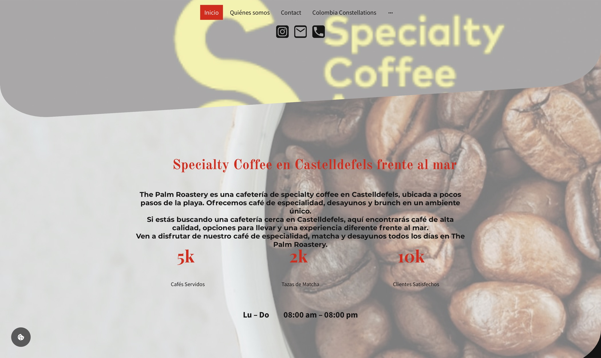
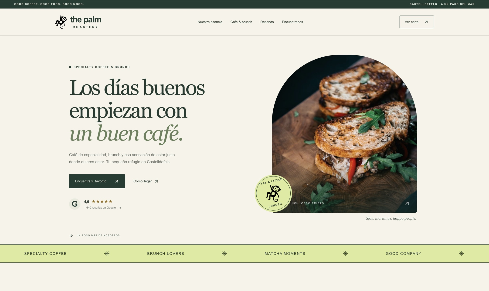
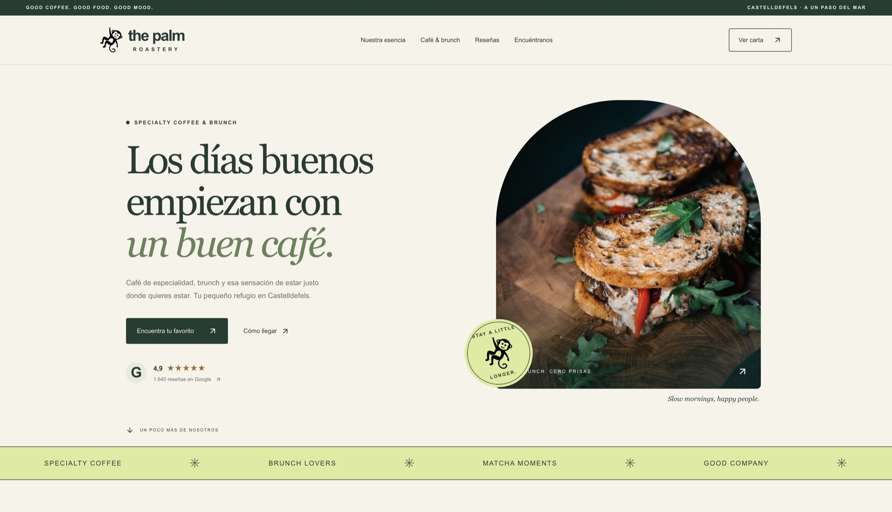
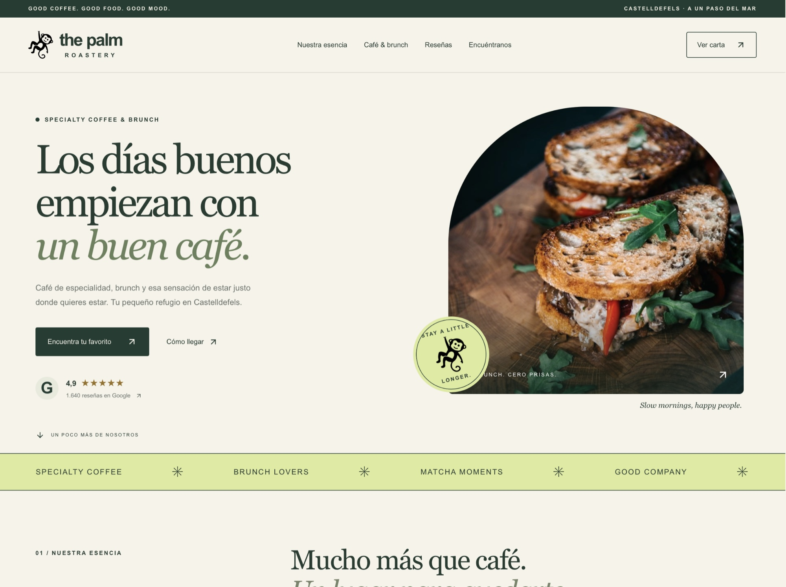
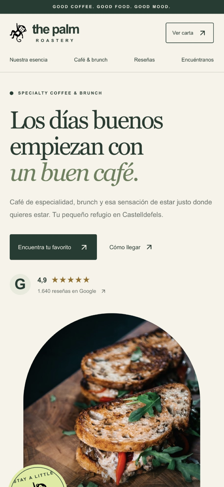

The Palm
Roastery.
Su web anterior hablaba de café, pero la imagen y el recorrido no mostraban lo que se vive en el local. La reconstruimos para que apetezca descubrir su brunch y visitarles junto al mar.


AntesDespuésDesliza para ver el cambio
The Palm tenía una web básica, con información dispersa y páginas que no ayudaban a elegir qué pedir ni a descubrir el local. La experiencia no reflejaba la personalidad de su café y su brunch. Faltaba un recorrido que conectara la carta, el ambiente y la visita al establecimiento.
Ver web anteriorRediseñamos la web siguiendo la identidad del local y reunimos lo importante en un recorrido claro. Incorporamos fotografías que abren el apetito, una carta visual para elegir con facilidad, información sobre sus cafés y accesos directos a reseñas y Google Maps. Ahora resulta más sencillo pasar de descubrir The Palm a querer visitarlo.
Explorar nueva webLa nueva identidad acompaña a quien descubre The Palm desde el ordenador, la tableta o el móvil.


